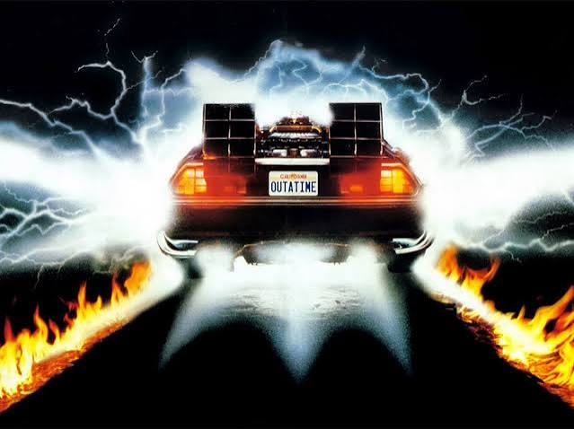

Sinopse
De Volta para o Futuro conta a história de Marty McFly, um adolescente que acaba viajando para o passado usando uma máquina do tempo construída pelo cientista Doc Brown.
Marty volta para o ano de 1955 e acaba interferindo na história de seus próprios pais. Agora ele precisa encontrar uma maneira de fazer com que eles se apaixonem e também descobrir como voltar para o ano de 1985.
Trailer
Elenco
Alguns dos principais atores e personagens que fazem parte de De Volta para o Futuro.

Marty McFly
Michael J. Fox
O adolescente que viaja acidentalmente para 1955.

Dr. Emmett Brown
Christopher Lloyd
O cientista responsável pela criação da máquina do tempo.

Lorraine Baines
Lea Thompson
A mãe de Marty que conhece seu filho quando ele viaja para 1955.

George McFly
Crispin Glover
O pai de Marty, que é tímido e tem dificuldades para enfrentar Biff.

Biff Tannen
Thomas F. Wilson
O personagem que costuma perseguir e causar problemas para George.

Jennifer Parker
Claudia Wells
Namorada de Marty e uma das pessoas mais importantes para ele.

Dave McFly
Marc McClure
Um dos irmãos de Marty e filho de George e Lorraine.

Linda McFly
Wendie Jo Sperber
Irmã de Marty e filha de George e Lorraine.

Sam Baines
George DiCenzo
Pai de Lorraine e avô de Marty.

Stella Baines
Frances Lee McCain
Mãe de Lorraine e integrante da família Baines.

Mr. Strickland
James Tolkan
Professor da escola de Marty, conhecido por ser bastante rígido.

Marvin Berry
Harry Waters Jr.
Músico que Marty encontra durante sua viagem para 1955.

Goldie Wilson
Donald Fullilove
Um personagem que Marty conhece durante sua viagem ao passado.
Babs
Lisa Freeman
Uma das personagens presentes na história de 1955.
Betty
Cristen Kauffman
Personagem que aparece durante os acontecimentos em 1955.

Dixon
Courtney Gains
Um dos personagens que aparece durante os acontecimentos no passado.
Galeria



Curiosidades
🚗 DeLorean
O carro usado como máquina do tempo é um DeLorean DMC-12.
⚡ 1,21 gigawatts
Essa é a quantidade de energia necessária para fazer a máquina do tempo funcionar.
⏰ Viagem para 1955
Marty viaja de 1985 para 1955 e precisa tomar cuidado para não mudar seu próprio futuro.
🎬 Primeiro filme
O filme de 1985 foi o primeiro da trilogia De Volta para o Futuro.
Você gosta de De Volta para o Futuro? Deixe sua opinião sobre o filme.